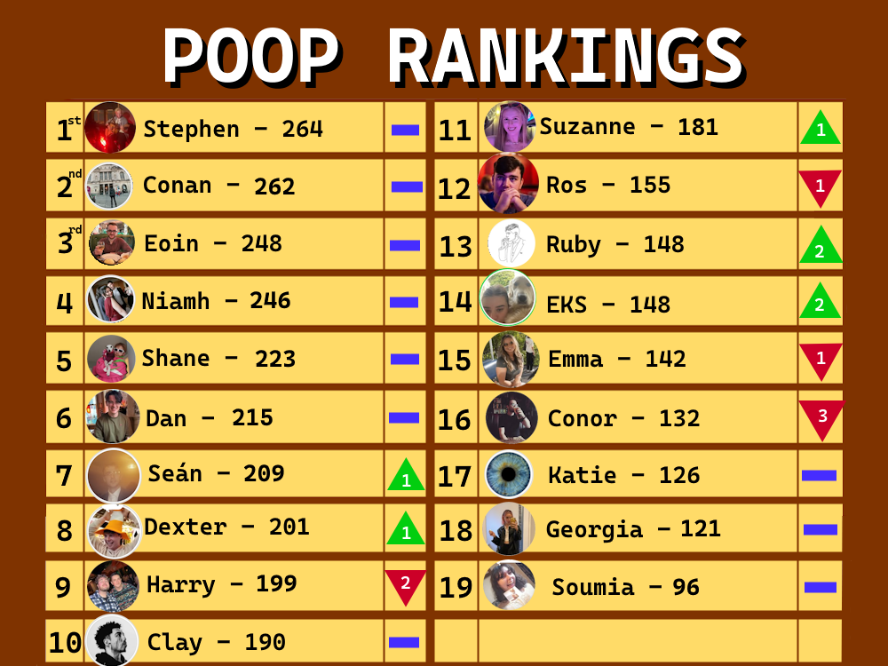

2025 Poopathon Update!!!
Welcome my poopers to our brand new website that I have created to display our stats and achievements for the month of
Leaderboard
Here are our rankings as of midnight on the 31st of May, very impressed with us all, this month has had some drastic changes
Notice the tight contention at the top of the leaderboard along with many duelling partners such as Ruby and Emma Smyth. Followed by noticing the changes in the leaderboard since April, Conor for one has fallen 3 whole places showing how his shitting has drastically reduced.
Personal Records
We have personal highs this month from these contestants

Conan - 61

Niamh - 55

Shane - 57

Seán - 48

Dexter - 48
Clay - 47
Ruby - 37
Emma Smyth - 37
And we have personal lows this month from these contestants

Harry - 33
Ros - 24
Conor - 13
Weight and Scale
In total we have created 3562 poops which has a massive weight of 1175kg That is seriously impressive dumpage, possibly filling up a whole room! It messures in as the same weight as the following items;